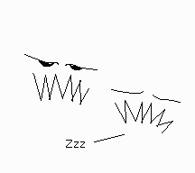
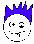

|
|
Toonbots message board: In fact, the whole Jihad v0.5
[ toonbots home ]
[ message board archive ]
[ the toon-o-matic software ] [ forum ]
|
Michael Wed Jul 4 10:32:44 2001
In fact, the whole Jihad v0.5
Heck, here's everybody I've drawn so far.

Hmm. I really don't think much of those wolverines. Maybe I should use Tirdun's picture. Or something. Hmm.
|
Brother Emsworth Wed Jul 4 14:12:08 2001
Re: In fact, the whole Jihad v0.5
> Heck, here's everybody I've drawn so far. Hmm. I really don't think
> much of those wolverines. Maybe I should use Tirdun's picture. Or
> something. Hmm.
::wolverines gnaw away at dozing semi-meta counterparts::
Seriously, though, it's nice to have the currently rendered Jihad members all available on one page. Still a few members of the upper Jihad hierarchy who have yet to be rendered, though, including the Pooglian One (then again, he probably absconded to Vegas with the PAFTWJ petty cash.)
|
Pooga Mon Jul 9 12:56:49 2001
Re: In fact, the whole Jihad v0.5
> (then again, he probably absconded to Vegas with the PAFTWJ petty cash.)
That, sir, is a vicious lie! I lost the PAFTWJ petty cash at reservation casinos along the way long before I reached Nevada, much less Vegas! I had to break out Michael's credit cards for Vegas.
|
Chris Wed Jul 4 15:35:27 2001
Re: In fact, the whole Jihad v0.5
> Hmm. I really don't think much of those wolverines.
Well, yours are more in keeping with the minimalist nature of the comic, though. Also easier to change them around if they ever get actually turned into Toon-o-Matic code... character name="godfrey" aspect="mouthopen" or whatever.
|
Michael Wed Jul 4 16:01:33 2001
Re: In fact, the whole Jihad v0.5
> Well, yours are more in keeping with the minimalist nature of the comic,
> though. Also easier to change them around if they ever get actually turned
> into Toon-o-Matic code... character name="godfrey"
> aspect="mouthopen" or whatever.
If they're later possible via Toon-o-Matic rendering, then things will really start hopping. I don't want floating heads forever, as you know.
Dang, I left the window open after dark again. A moth and two crane flies. This wacky country doesn't have window screens and I *just don't know why*.
Anyway, I don't like the wolverines. I like Tirdun's wolverines, but not enough. I just don't know exactly what I'll do. It's always a surprise here at Toonbots.
I was thinking of using Pooga's little pig icon for him. For TimberBram, a very pixelated knight's armor. And for Chris... For Chris.... I'm still not sure. An Easter Island head, maybe.... Yeah. That works for me.
|
Chris Wed Jul 4 23:56:01 2001
Re: In fact, the whole Jihad v0.5
> And for Chris... For Chris.... I'm still
> not sure. An Easter Island head, maybe.... Yeah. That works for me.
Do I want to know what sort of thought processes came up with that?
|
Michael Thu Jul 5 17:40:34 2001
Re: In fact, the whole Jihad v0.5
> Do I want to know what sort of thought processes came up with that?
Sorry. They're opaque. I have some nice head shots, though.
|
TimberBram Fri Jul 6 01:19:48 2001
Re: In fact, the whole Jihad v0.5
> For TimberBram, a very pixelated knight's armor.
That sounds cool.
Peace, Tim Bram.
|
Pooga Mon Jul 9 13:13:32 2001
Re: In fact, the whole Jihad v0.5
> I was thinking of using Pooga's little pig icon for him.
It worked! I've become iconic!
|
Tirdun Thu Jul 5 06:00:09 2001
Re: In fact, the whole Jihad v0.5
> Heck, here's everybody I've drawn so far. Hmm. I really don't think
> much of those wolverines. Maybe I should use Tirdun's picture. Or
> something. Hmm.
Soooo, how come I'm a spiky blue-haired guy with that PARTICULAR face, eh?? ;)
|
Michael Thu Jul 5 08:17:27 2001
Re: In fact, the whole Jihad v0.5
> Soooo, how come I'm a spiky blue-haired guy with that PARTICULAR face,
> eh?? ;)
How come Chris is an Easter Island head? I can't speak for the murky goings-on in my artistic right-brained facilities, man. Besides, I think Doc is your favorite character anyway. That whole episode where his hair turned blue ... I can tell he corresponds to some deeply buried part of your psyche.
The face is that way because you're Tirdun the Mad. If you were Tirdun the Beatific, you'd look different, of course. Sheesh, I have to explain *everything*.
|
Tirdun Thu Jul 5 11:05:30 2001
Re: In fact, the whole Jihad v0.5
> Besides, I think Doc is your favorite character anyway. That whole episode
> where his hair turned blue ... I can tell he corresponds to some deeply buried
> part of your psyche.
You've been talking with my psycologist, he SWORE he'd never tell. I'll KILL HIM. AAAAARAARAARRRHHRRRGGHH!
|
|
|